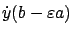
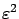
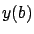
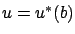

Next: 4.2.4 Variational equation
Up: 4.2 Proof of the
Previous: 4.2.2 Temporal control perturbation
Contents
Index
4.2.3 Spatial control perturbation
We now construct control perturbations known as
``needle" perturbations, or Pontryagin-McShane perturbations. As the first
name suggests, they will be represented by pulses of short duration; the reason for
the second name is
that perturbations
of this kind
were first used by McShane in calculus of variations
(see Section 3.1.2)
and later adopted by Pontryagin's school for the proof of the maximum principle.
Let  be an arbitrary element of
the control set
be an arbitrary element of
the control set  . Consider the interval
. Consider the interval
![$ I:=(b-\varepsilon a,
b]\subset (t_0,t^*)$](img1063.gif) , where
, where  is a point of
continuity4.2 of
is a point of
continuity4.2 of  ,
,  is arbitrary, and
is arbitrary, and
 is
small. We
define the perturbed control
is
small. We
define the perturbed control
Figure 4.5 illustrates this control perturbation and the resulting
state trajectory perturbation. As the figure suggests, the perturbed trajectory  corresponding to
corresponding to  will deviate from
will deviate from  on the interval
on the interval  and
afterwards will ``run
parallel" to
.
We now proceed to formally characterize the deviation over
; the behavior
of
over the interval
and
afterwards will ``run
parallel" to
.
We now proceed to formally characterize the deviation over
; the behavior
of
over the interval ![$ [b,t^*]$](img1070.gif) will be studied in Section 4.2.4.
will be studied in Section 4.2.4.
Figure:
A spatial control perturbation and its effect on the
trajectory
|
|
We will let  denote equality up to terms of order
denote equality up to terms of order
 .
The first-order Taylor expansion of
around
.
The first-order Taylor expansion of
around  gives
gives
Rearranging terms and using the fact that
satisfies the differential equation (4.7) with  , we have
, we have
On the other hand, the first-order Taylor expansion of the perturbed solution
around
 yields
yields
where by

we mean the right-sided derivative of
at
.
Since
 by
construction and
satisfies (4.7) with
by
construction and
satisfies (4.7) with  , we obtain
, we obtain
 |
(4.12) |
We now apply the Taylor expansion to the last term in (4.12):
 |
(4.13) |
In view of (4.10), the second term on the right-hand side of (4.13) is of order

; hence we can omit it and the approximation will remain valid.
Thus (4.12) simplifies to
Comparing this formula with (4.11), we arrive at
 |
(4.14) |
where
Intuitively, this result makes sense: up to terms of order
, the difference between the two states 
and  is the difference (4.15) between the state velocities at
is the difference (4.15) between the state velocities at  corresponding to
corresponding to  and
and 
, multiplied by the length
 of the time interval on which the perturbation is acting.
of the time interval on which the perturbation is acting.
Next: 4.2.4 Variational equation
Up: 4.2 Proof of the
Previous: 4.2.2 Temporal control perturbation
Contents
Index
Daniel
2010-12-20